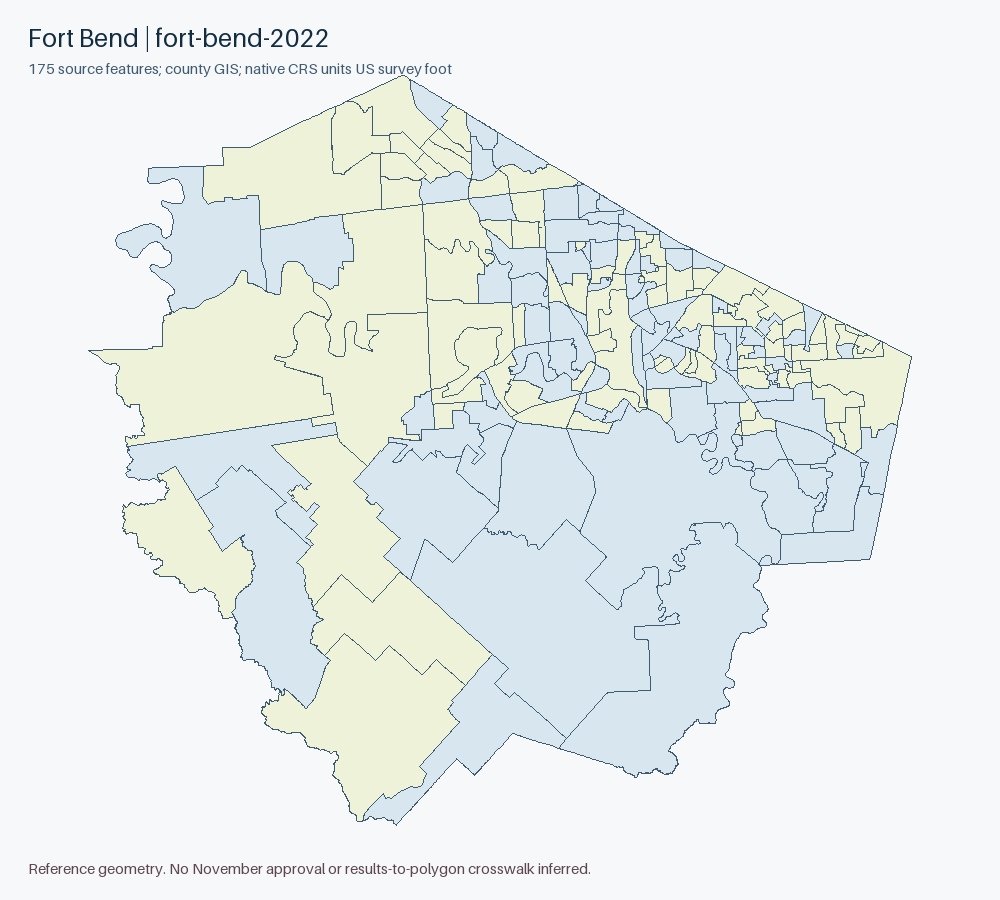
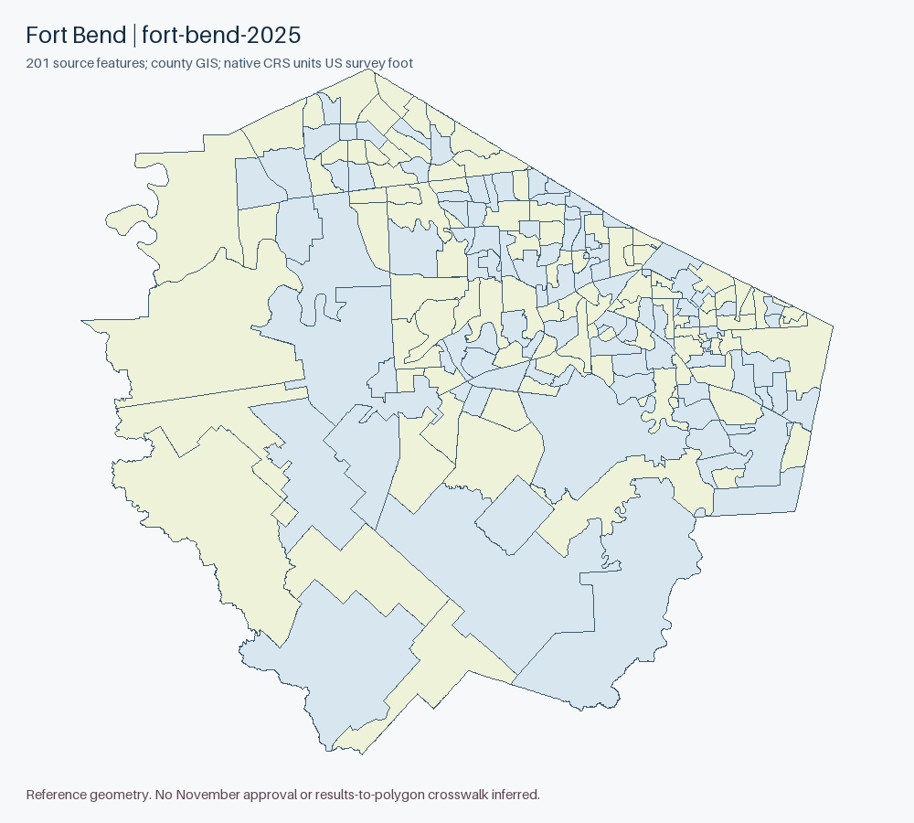

← Texas offline indexFort Bend County
Priority 8 of34 48157 • 356,141 accepted2024 Senate candidate votes
County election page warns about stale third-party2021-2025 districts and links a new precinct app. Retained app/item chain reaches Elections_Public/MapServer/1. County service layer named Voter Precincts2025 has201 features; older2022 layer175 retained independently. Clarity November-labelled setup is testmode and excluded; source names/edit dates do not establish November boundary approval.
Complete county reference boundaries
Each ZIP copies every source SHP geometry body and DBF record verbatim. Only SHP/SHX headers, record numbering and county bounds are rebuilt. All attributes, rings and vertices remain; no simplification, topology repair or vote allocation. Native CRS: NAD83 Texas Lambert Conformal Conic, metre, X=easting/Y=northing.
Actual county originals
County GIS fort-bend-2022 • 175 features
Complete pre/post IDs, counts and batch audit • Native CRS, invalid geometry, Z/M and overlap diagnostics
Original full-precision query pages, all attributes; concatenate features using the audited IDs. No GeoJSON reprojection or curve linearization is used for originals.

County GIS fort-bend-2025 • 201 features
Complete pre/post IDs, counts and batch audit • Native CRS, invalid geometry, Z/M and overlap diagnostics
Original full-precision query pages, all attributes; concatenate features using the audited IDs. No GeoJSON reprojection or curve linearization is used for originals.

Source routes and precise access outcomes
Native reporting compatibility
853 source-scoped reporting identities accounted: {"unknown": 317, "ambiguous": 33, "source conflict": 503}. Exact literal ID overlap is ambiguous, not an approved crosswalk. Test/older election classes, vote centers and administrative groups remain separate.
All identity-by-identity diagnostics • Full accepted constituent inventory